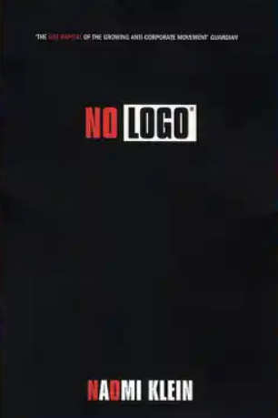
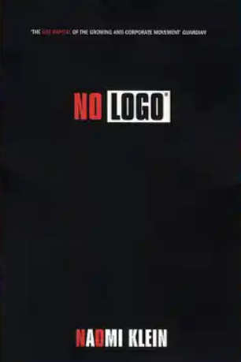
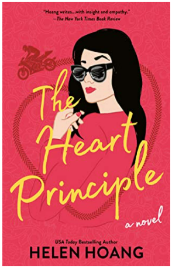
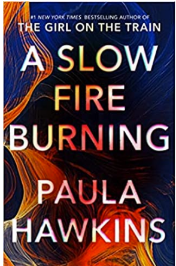
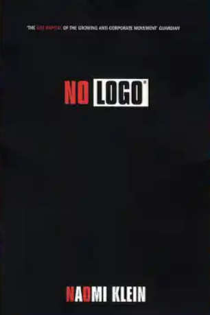

Fiction is the telling of stories which are not real. More specifically, fiction is an imaginative form of narrative,
one of the four basic rhetorical modes. Although the word fiction is derived from the Latin fingo, fingere, finxi, fictum,
"to form, create", works of fiction need not be entirely imaginary and may include real people, places, and events.
Fiction may be either written or oral. Although not all fiction is necessarily artistic, fiction is largely perceived
as a form of art or entertainment. The ability to create fiction and other artistic works is considered to be a
fundamental aspect of human culture, one of the defining characteristics of humanity.
Here you have some exmaples:
 
Refers to literature based in fact. It is the broadest category of literature. The Nonfiction Department has books
and videos in many categories including biography, business, cooking, health and fitness, pets, crafts, home decorating,
languages, travel, home improvement, religion, art and music, history, self-help, true crime, science and humor.
We also have a section of popular and award-winning documentary DVDs.
